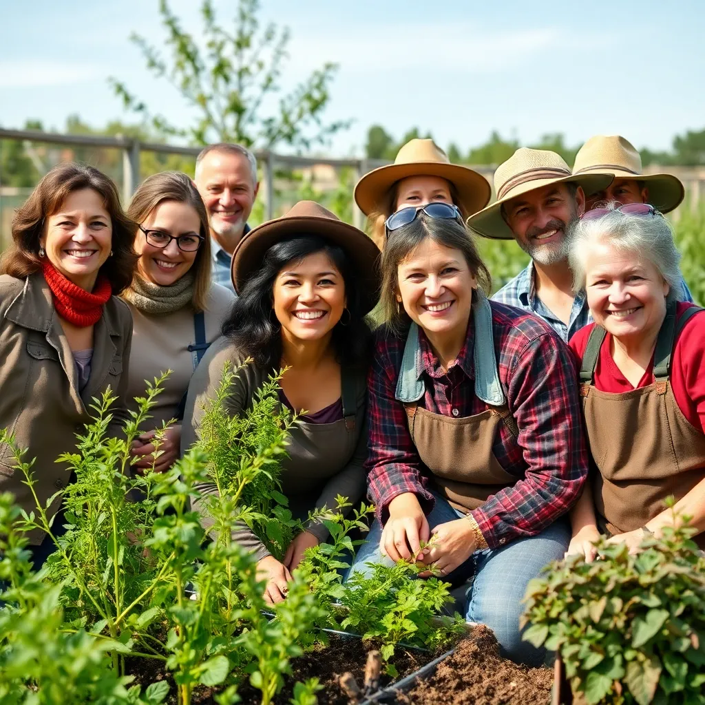

GreenMentor Hub is dedicated to inspiring gardeners of all levels, whether you are a beginner just planting your first seed or a seasoned horticulturist. We focus on quality mentorship that fosters sustainable and joyful growth by combining traditional gardening wisdom with modern techniques. Our team consists of expert horticulturists, botanists, landscape designers, and experienced mentors who provide educational workshops, real-time video consultations, and personalized plant care techniques tailored specifically to your garden’s ecosystem and your personal goals.
We believe that cultivating a garden is more than just planting and watering – it is a journey of knowledge, patience, and passion. Through our services, we aim to nurture not just plants, but a thriving community rooted in appreciation and stewardship of the natural world. We encourage sustainable practices that protect biodiversity and promote environmental health for future generations.
At GreenMentor Hub, we value connection – with nature, with our community members, and with the helpers and educators that guide us. We host a variety of events and mentorship programs designed to uplift your gardening skills and bring you closer to your green goals.
